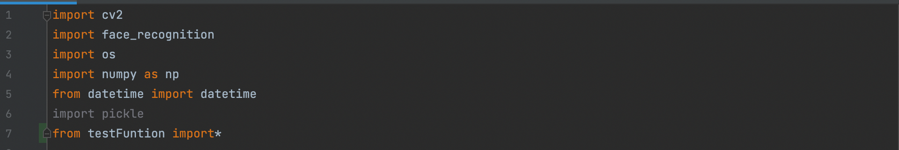
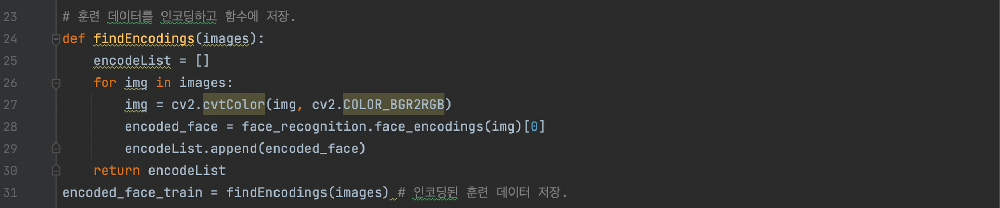
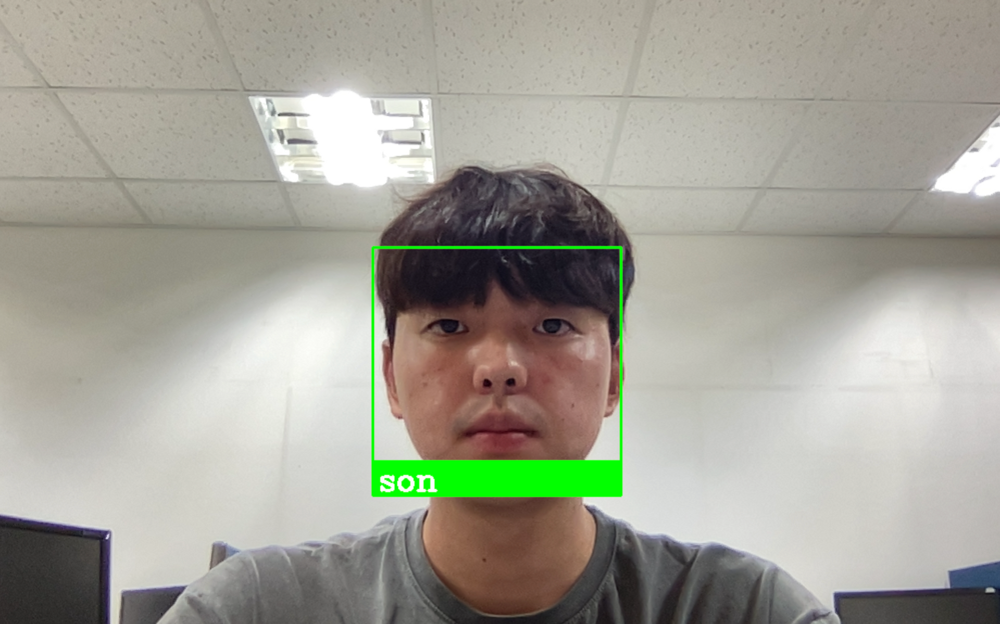
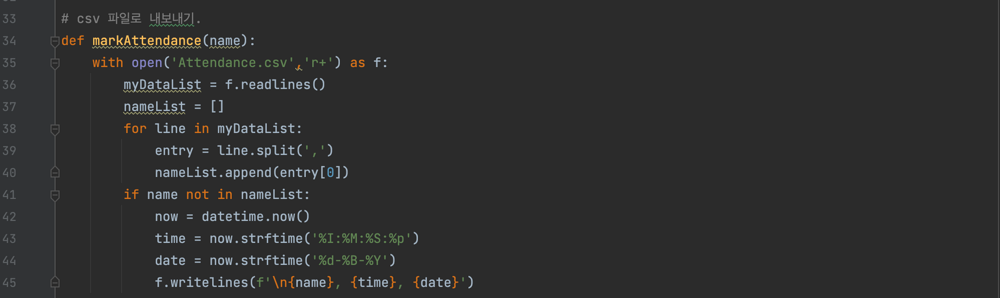

DLib을 이용한 얼굴인식 출석부 제작
python을 이용하여 얼굴을 인식하고 시스템을 구축합니다.
단순히 사람의 얼굴의 위치만 감지하는 것이 아닌 얼굴을
식별할 수 있는 시스템을 만듭니다.
얼굴 인식을 위한 딥러닝
널리 사용되는 딥 러닝 기반의 얼굴 인식 시스템 중 일부.
- DeepFace
- **DeepID** series of systems
- VGGFace
- FaceNet
프로젝트를 위한 준비단계 (모듈 설치하기)
1) Dlib
Dlib은 머신러닝 알고리즘을 포함하고 있는 최신 C++ 툴킷입니다.
|
# installing dlib pip install dlib |
|---|
2) face_recognition
face_recognition 라이브러리는 dlib 기반의 얼굴 인식 기능을 포함하고 있습니다.
|
# installing face recognition pip install face recognition |
|---|
3) openCV
영상 처리를 쉽게 할 수 있는 기능을 포함하고 있는 라이브러리 입니다.
|
# installing opencv pip install opencv |
|---|
프로젝트 시작하기
필요한 라이브러리를 설치
ㆍ훈련 이미지 데이터가 저장되어 있는 경로를 지정해줍니다.
student 폴더에 얼굴을 인식할 모든 학생의 이미지 데이터를 넣어 저장합니다.
이미지는 .jpg/.jpeg 형태로 저장하도록 합니다.
ㆍ 이미지를 저장할 변수를 만듭니다.
ㆍ 경로 디렉토리에 있는 모든 이미지 파일을 탐색하고, 이미지를 읽고, 이미지 목록에 이미지 배열을 추가하고, classNames에 파일 이름을 추가합니다.
ㆍ findencodings 함수를 생성합니다.
ㆍ 모든 이미지를 인코딩하는 작업과 인코딩된 이미지들을 변수에 저장합니다.
ㆍ openCV는 RGB가 아닌 BGR형태로 로딩하기 때문에 변환하도록 해주는 작업을 해줍니다.
웹 캠 읽기
ㆍ cv를 통해 웹캠을 시작.
ㆍ 인식 부분에 대해 이미지를 1/4크기로 줄입니다. 크기를 조정하면 초당 프레임 향상 효과가 있습니다.
ㆍ face_recognition.face_locations()는 크기가 조정된 이미지(imgS)에서 호출됩니다.
ㆍ 출력 프레임에 오버레이하려면 얼굴 경계 상자 좌표에 4를 곱해야 합니다.
ㆍ cv2.rectangle()을 사용하여 경계 상자를 그립니다.
ㆍ cv2.putText()를 사용하여 출력 프레임에 일치하는 이름을 넣습니다.
실행화면
데이터 내보내기
ㆍ csv 파일로 내보내기 위한 함수를 선언합니다.
ㆍ 파일에 대한 권한을 읽고 쓰기가 가능한 ‘+r’로 선언합니다.
ㆍ 이름, 시간, 날짜 순으로 데이터를 내보내기 합니다.
보완해야할 점
ㆍ 얼굴을 인식한 후 csv파일이 아닌 웹에서 출석을 확인할 수 있도록 한다.
ㆍ 얼굴 인식을 보다 정교하게 할 수 있도록 한다.